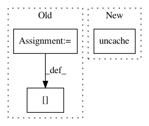

01d18e835815feedeac2fbeff8025cdd94128eaa,pynets/fmri/clustools.py,NilParcellate,create_clean_mask,#NilParcellate#,411
Before Change
// Ensure mask does not inclue voxels outside of the brain
self._masked_fmri_vol = np.asarray(self._func_img.dataobj)[:, :, :, 0]
self._masked_fmri_vol = self._masked_fmri_vol.astype("bool")
self._mask_data[~self._masked_fmri_vol] = 0
del self._masked_fmri_vol
self._clust_mask_corr = "%s%s%s%s" % (self._dir_path, "/", mask_name, ".nii")
self._clust_mask_corr_img = nib.Nifti1Image(self._mask_data, affine=self._clust_mask_img.affine,
header=self._clust_mask_img.header)
After Change
math_img("img > 0", img=mask_res_img)],
threshold=1, connected=False)
self._mask_img.uncache()
mask_res_img.uncache()
else:
self._clust_mask_corr_img = intersect_masks([math_img("img > 0", img=func_vol_img),
math_img("img > 0", img=clust_mask_res_img)],
threshold=1, connected=False)
In pattern: SUPERPATTERN
Frequency: 3
Non-data size: 3
Instances
Project Name: dPys/PyNets
Commit Name: 01d18e835815feedeac2fbeff8025cdd94128eaa
Time: 2019-12-09
Author: dpisner@utexas.edu
File Name: pynets/fmri/clustools.py
Class Name: NilParcellate
Method Name: create_clean_mask
Project Name: dPys/PyNets
Commit Name: e4a36f3215735f8c351beb8f27edeb02eabb121f
Time: 2019-11-04
Author: dpisner@utexas.edu
File Name: pynets/core/nodemaker.py
Class Name:
Method Name: create_spherical_roi_volumes
Project Name: dPys/PyNets
Commit Name: e4a36f3215735f8c351beb8f27edeb02eabb121f
Time: 2019-11-04
Author: dpisner@utexas.edu
File Name: pynets/fmri/clustools.py
Class Name:
Method Name: individual_clustering